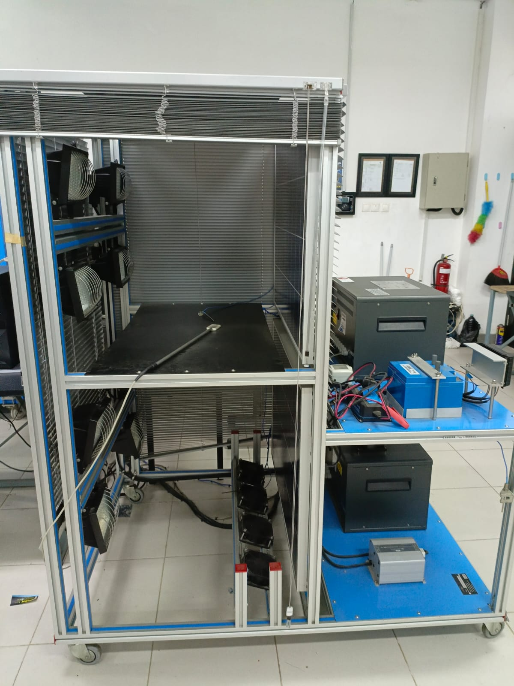
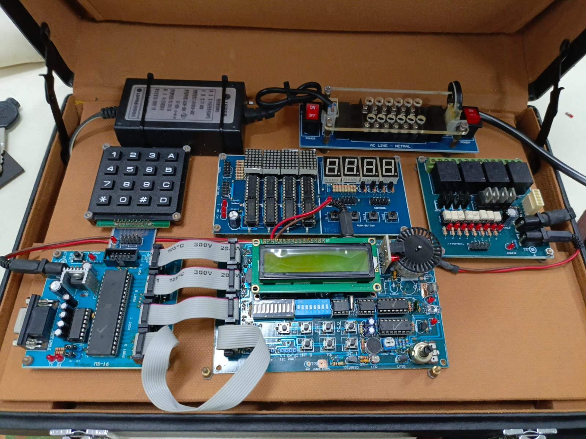
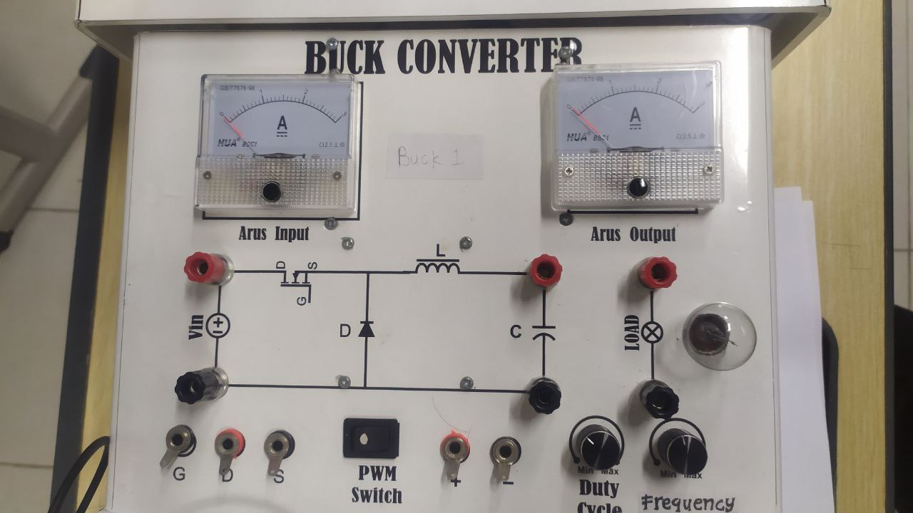
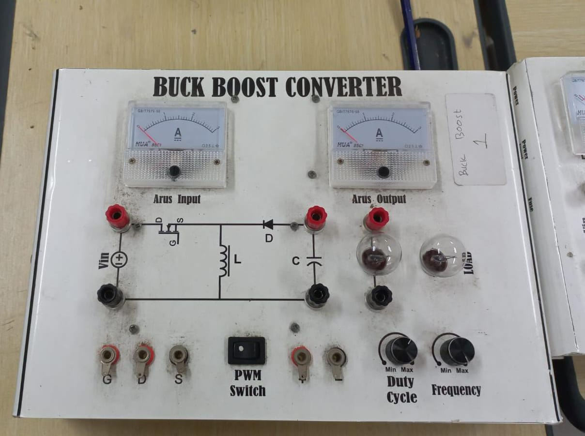

LABORATORIUM SCADA
Tentang Laboratorium SCADA
SCADA(Supervisory Control And Data Acquisition) adalah sistem kendali industri berbasis komputer yang dipakai untuk pengontrolan suatu proses, sistem SCADA ini banyak dijumpai dilapangan produksi minyak dan gas(Upstream). Jaringan Listrik Tegangan Tinggi dan Tegangan Menengah(Power Transmission and Distribution dan beberapa aplikasi yang dipaki untuk memonitor dan mengontrol areal produksi yang cukup luas).
Alat-Alat
1. EESFC(Computer Controlled Photovoltaic Solar Energy Unit)
Edibon - SPAIN

(Computer Controlled Photovoltaic Solar Energy Unit), "EESFC", mencakup peralatan yang menggunakan hukum fotokonversi untuk konversi langsung radiasi matahari menjadi listrik. Energi yang diserap disediakan oleh simulasi radiasi matahari, yang dalam kasus kami disalurkan oleh panel dengan sumber cahaya kuat (lampu surya).
2. EEEC(Computer Controlled Wind Energy Unit)
Edibon - SPAIN


(Computer Controlled Wind Energy Unit), "EEEC", berisi aerogenerator, dalam skala laboratorium, dan digunakan untuk mempelajari konversi energi kinetik angin menjadi energi listrik dan mempelajari pengaruh beberapa faksi pada pembangkitan ini..
3. TORC(Computer Controlled Organic Rankine Cycle Unit)
EDIBON - SPAIN

(Computer Controlled Organic Rankine Cycle Unit), "TORC", memungkinkan siswa untuk mempelajari proses lengkap dan komponen Siklus Rankine organik, serta variabel utama yang mengambil bagian dalam proses tersebut. Fluida kerja (pendingin R245fa) diuapkan dengan menggunakan sumber panas. Pertama-tama, cairan pendingin didorong oleh pompa yang dikendalikan komputer melalui penukar pelat (phreheater) di mana air keran yang dipanaskan dalam kondensor siklus mengalir berlawanan arah.
4. UCP(Process Control System)
EDIBON - SPAIN


(Process Control System), "UCP", dirancang oleh EDIBON, memungkinkan studi beberapa jenis dari beberapa jenis kontrol otomatis dan dapat digunakan untuk mengontrol variabel yang berbeda (aliran, level, suhu, tekanan, pH, konduktivitas dan TDS) dalam beberapa cara.
5. Microcontroller
Microcontroller (MCU for microcontroller unit) adalah komputer kecil pada chip sirkuit terpadu (IC) logam-oksida-semikonduktor (MOS) tunggal. Mikrokontroler dirancang untuk aplikasi yang tertanam, berbeda dengan mikroprosesor yang digunakan pada komputer pribadi atau aplikasi tujuan umum lainnya yang terdiri dari berbagai chip diskrit.
6. Buck Converter
Buck converter (step-down converter) adalah konverter daya DC-ke DC yang menurunkan tegangan dari input (supply) ke output (beban). Ini adalah kelas catu daya mode aktif (SMPS) yang biasanya berisi setidaknya semikonduktor dan setidaknya satu elemen penyimpan energi, kapasitor, induktor, atau kombinasi keduanya. Untuk mengurangi riak tegangan, filter yang terbuat dari kapasitor biasanya ditambahkan ke keluaran konverter (filter sisi beban) dan masukan (filter sisi suplai).
7. Boost Converter

Boost converter (step-up converter) adalah konverter daya DC-ke-DC yang menaikkan tegangan dari input (supply) ke outputnya (beban). ini adalah kelas catu daya mode aktif (SMPS) yang berisi setidaknya dua semikonduktor (dioda dan transistor) dan setidaknya satu elemen penyimpan energi.
8. Buck Boost Converter
Buck boost converter adalah jenis konverter DC-ke-DC yang mempunyai besaran tegangan keluaran lebih besar atau lebih kecil dari besaran tegangan masukan. Ini setara dengan konverter flyback yang menggunakan induktor tunggal, bukan transformator. Dua topologi berbeda disebut konverter buck-boost. Keduanya dapat menghasilkan rentang tegangan keluaran, mulai dari yang jauh lebih besar (dalam besaran absolut) dibandingkan tegangan masukan, hingga hampir nol.